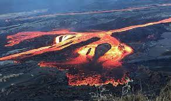
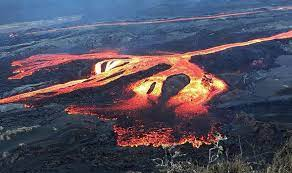

Homepage | Geography & Landforms | Climate & Endemic Organisms | Language & Economy | 3 Special Things To See Or Do In Isla Isabela | Photos Of Isla Isabela | References | Feedback
Isla Isabela is located in the eastern Pacific Ocean, 965 km west of Ecuador. It is the largest island in the Galapagos islands.
Isla Isabela mostly has volcanoes, and has about 5 active volcanoes. It also has a lot of lava puddles around the volcanoes. The most famous volcano being the Sierra Negra volcano.
 
